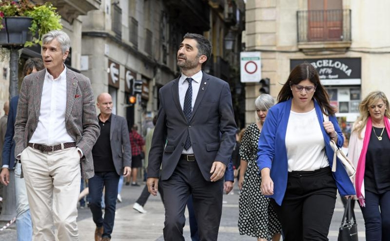
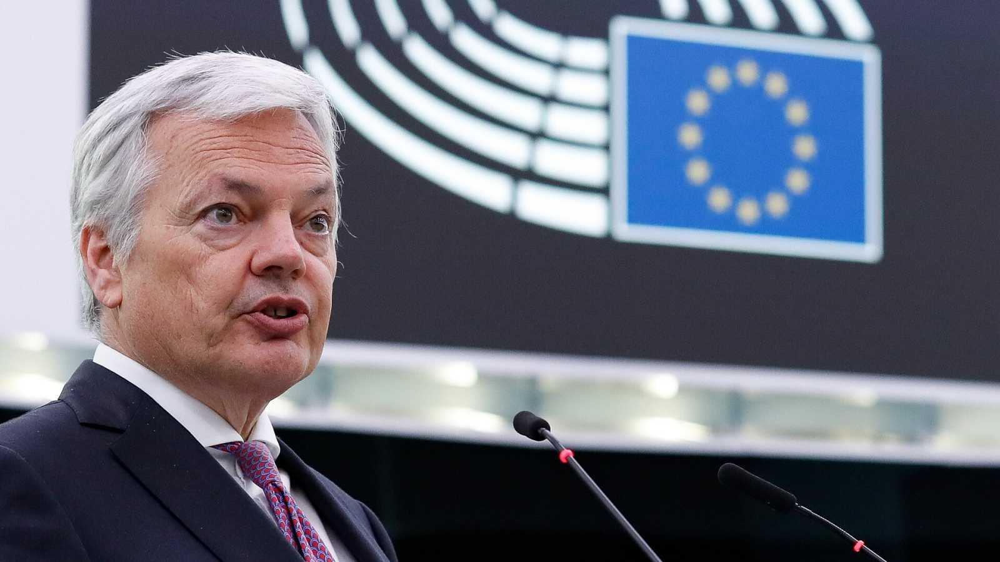
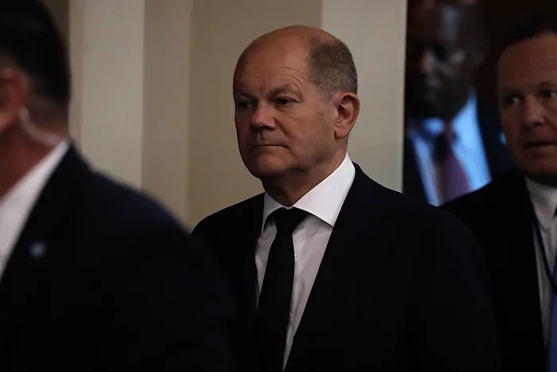

La tradicional feria Ecocultura regresará a Zamora capital este 2022 para celebrar su décimo octava
edición tras haberse convertido en la Feria Hispanolusa de Productos Ecológicos de referencia transfronteriza
para productores, elaboradores y distribuidores de productos ecológicos.
Ha dejado una gran actuación, siendo protagonistas en muchos momentos de la prueba y subiendo al pódium en multitud de ocasiones
En la disputadísima y vibrante primera edición de la Vuelta a Hispania Sub23, el Globalia-Zamora
Enamora ha dejado una gran actuación, siendo protagonistas en muchos momentos de la prueba y subiendo al pódium
en multitud de ocasiones. De esta manera, la estructura deja casi sellada la temporada 2022 con un muy buen sabor de boca.
Su formación ve el cese de Puigneró como un «error histórico»
Un «error histórico». Así ha considerado Junts el cese del vicepresidente del Govern, Jordi Puigneró,
anunciado este a última hora del día por el president Pere Aragonès tras la última crisis entre ambos
socios de gobierno. La formación, que esta mañana celebrará una ejecutiva extraordinaria para abordar el nuevo
escenario tras los últimos movimientos, tiene sobre la mesa la difícil decisión sobre si sale del Govern o no.

Puigneró, este miércoles con varios de los consejeros de Junts, horas antes de ser cesado.
Se verá con Gobierno, la oposición y jueces para tratar de desbloquear la renovación
El comisario de Justicia de la Unión Europea (UE), el liberal belga Didier Reynderes, ha llegado este miércoles
a Madrid para intentar desbloquear la renovación del Consejo General del Poder Judicial (CGPJ), pendiente desde
hace casi cuatro años. Su visita durará tres días e incluirá contactos políticos para desencallar las negociaciones,
pero también reuniones con jueces e instituciones judiciales.

El comisario de Justicia de la UE, Didier Reynders, en una intervención en el Parlamento Europeo.
El paquete reduce aún más las exportaciones de tecnología, servicios y productos químicos y lleva hasta 1.300 la lista de inblockquoteiduos y empresas castigadas por participar en la invasión y los "referendos de la vergüenza"
La presidenta de la Comisión Europea, Ursula von der Leyen, y el alto representante para la Política
Exterior, Josep Borrell, han anunciado este jueves las líneas generales del octavo paquete de sanciones contra Rusia
por la invasión de Ucrania. El objetivo sigue siendo "debilitar la economía rusa" y "hacer pagar a los responsables",
y responde directamente a la celebración de los "referendos de la vergüenza" ejecutados estos días en los
territorios ya ocupados, han señalado.
Berlín filtra a Kiev coordenadas de depósitos de municiones, imágenes de satélite y mensajes de radio interceptados
El Gobierno alemán está apoyando a Ucrania en la guerra mucho más intensamente de lo que se sabe. Según las
investigaciones del semanario Die Zeit y de la revista ARD Kontraste, Berlín no sólo ayuda con armas, sino también
con información de inteligencia militarmente utilizable sobre las posiciones del ejército ruso y los movimientos de las tropas.

Olaf Scholz, durante la Asamblea General de la ONU.